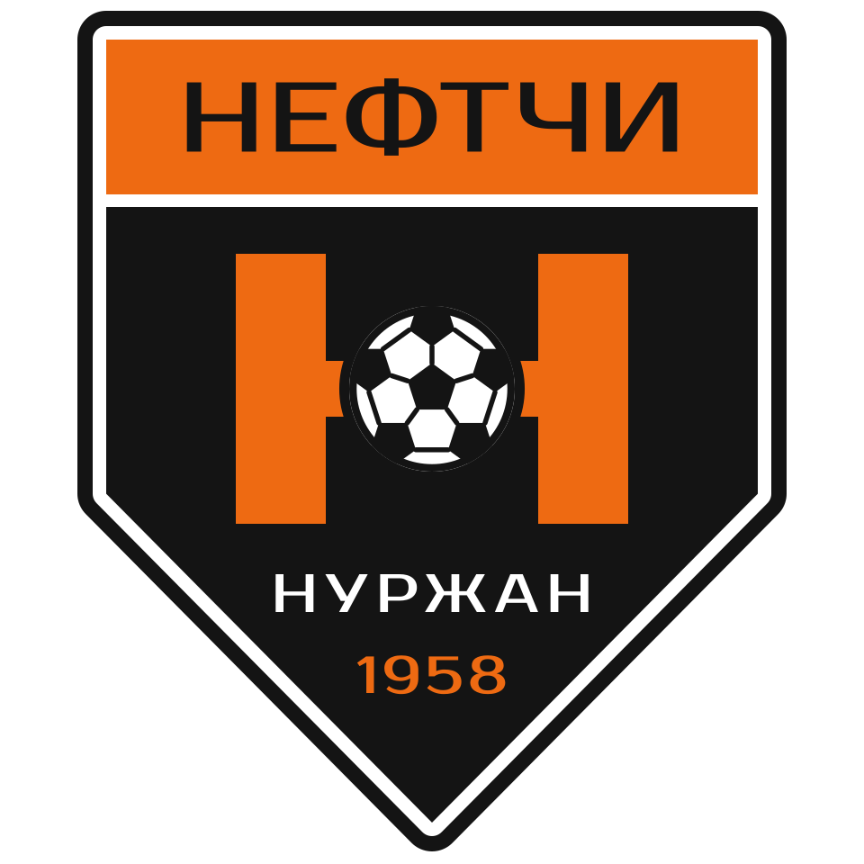
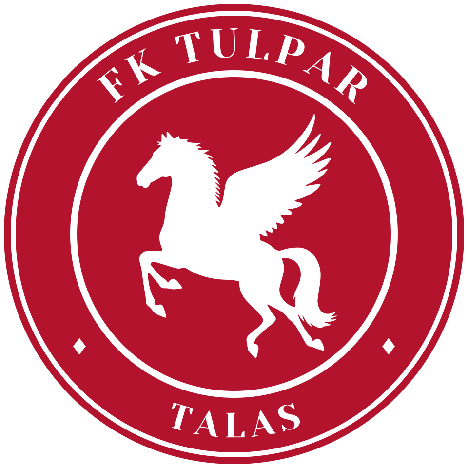
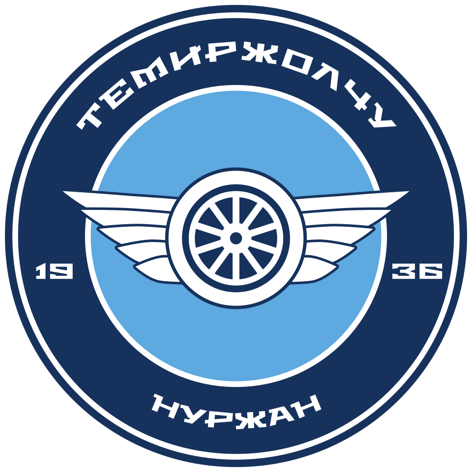
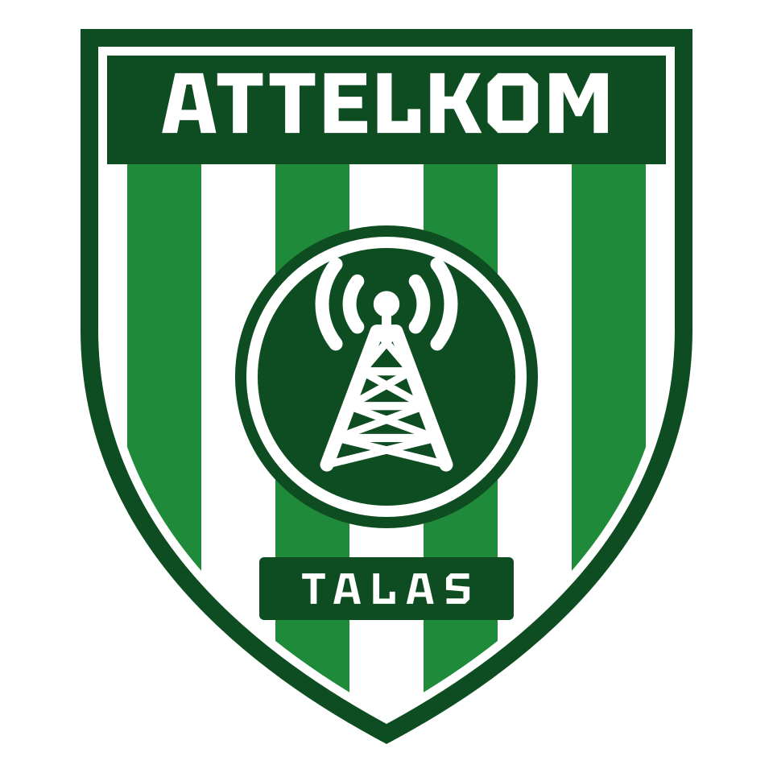
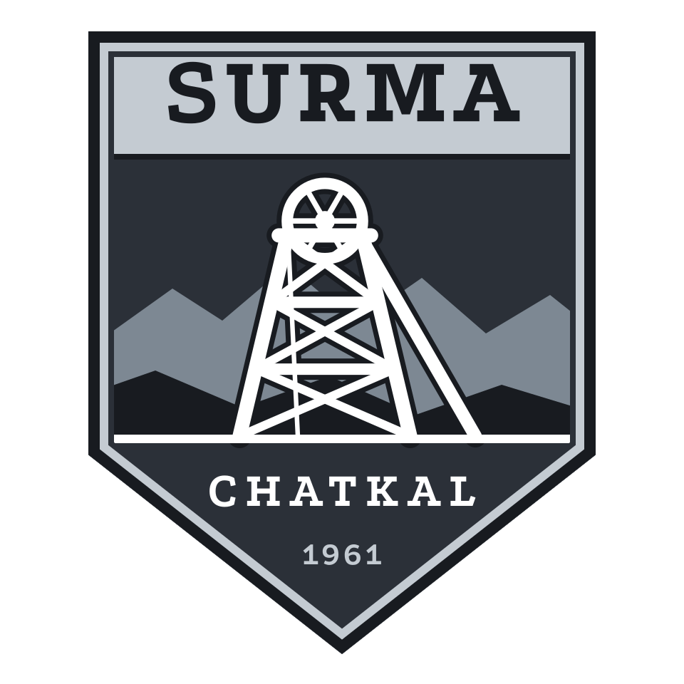
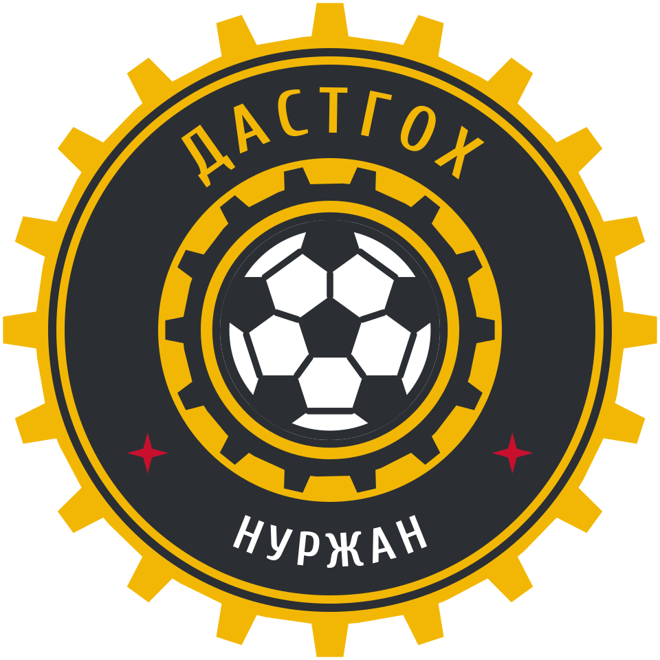
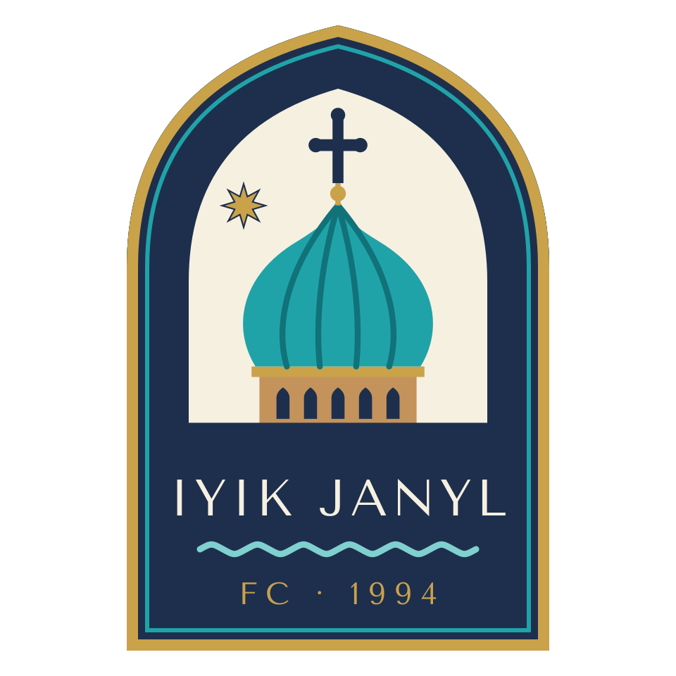
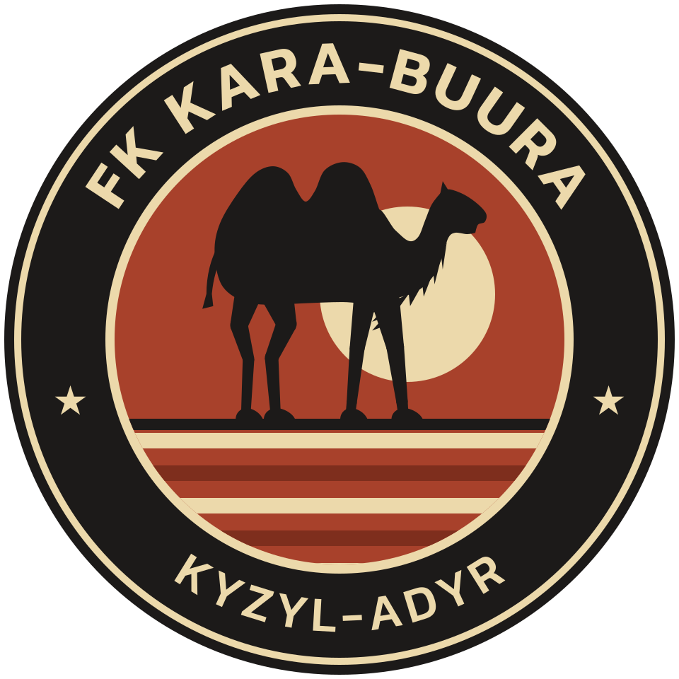
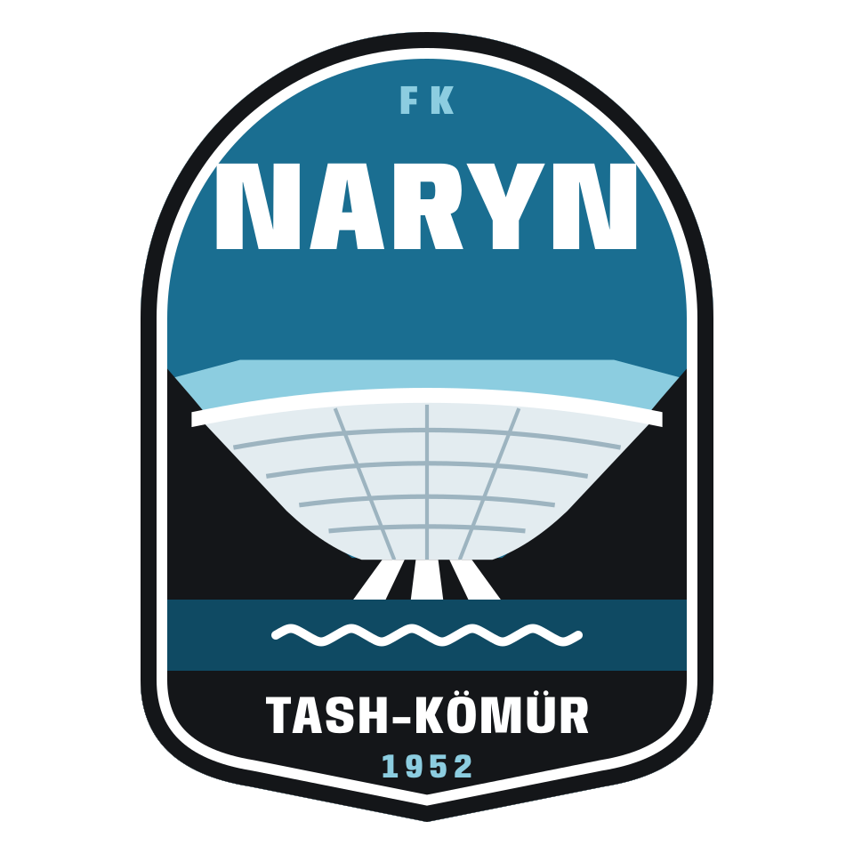

Irad League 2026
Clubs
The ten clubs of the 2026 Irad League. The league is open to clubs from the Irad Special Economic Zone.

Neftchi NurzhanNurzhan · Founded 195813 titles · Position 1
Tulpar TalasTalas · Founded 199311 titles · Position 2
Temirjolchu NurzhanNurzhan · Founded 19363 titles · Position 7
Attelkom TalasTalas · Founded 19962 titles · Position 4Universitet TalasTalas · Founded 19581 title · Position 5
Surma ChatkalSary-Bulak District · Founded 19611 title · Position 6
Dastgoh NurzhanNurzhan · Founded 1993no titles · Position 3
FC Iyık JanylIyık Janyl · Founded 1994no titles · Position 8
Kara-BuuraKyzyl-Adyr · Founded 1995no titles · Position 9
Naryn Tash-KömürTash-Kömür · Founded 1952no titles · Position 10